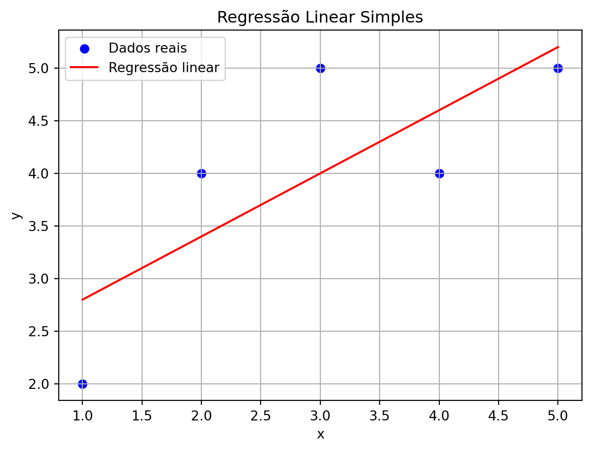

import numpy as np
import matplotlib.pyplot as plt
from sklearn.linear_model import LinearRegression
# Dados simulados
x = np.array([1, 2, 3, 4, 5]).reshape(-1, 1)
y = np.array([2, 4, 5, 4, 5])
# Criando e ajustando o modelo
modelo = LinearRegression()
modelo.fit(x, y)
# Coeficientes
print("Intercepto (b0):", modelo.intercept_)
print("Coeficiente angular (b1):", modelo.coef_[0])
# Previsões
y_pred = modelo.predict(x)
# Gráfico
plt.scatter(x, y, color='blue', label='Dados reais')
plt.plot(x, y_pred, color='red', label='Regressão linear')
plt.title("Regressão Linear Simples")
plt.xlabel("x")
plt.ylabel("y")
plt.legend()
plt.grid(True)
plt.show()Intercepto (b0): 2.2
Coeficiente angular (b1): 0.6